항공전자정비기능사 (2001-04-29 기출문제)
1과목: 임의 구분
1. 와이어 안테나를 사용하지 않는 것은?
- HF 통신기기
- 자동방향 탐지기
- 마아카 비이콘의 수신기
- VHF 통신기기
(정답률: 알수없음)

2. 구리와 콘스탄탄의 접합부에 구리에서 콘스탄탄 방향으로 전류를 흘리면 열을 발생하고, 반대 방향으로 전류를 흘리면 열을 흡수하는 현상을 무엇이라고 하는가?
- 주울의 법칙
- 쿨롱의 법칙
- 제에벡 효과
- 펠티어 효과
(정답률: 알수없음)
3. 주어진 진리표는 무슨 회로인가?
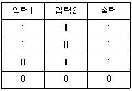
- AND회로
- OR회로
- NOT회로
- NAND회로
(정답률: 알수없음)
4. UHF 송신기에서 수정 발진기의 주파수를 원하는 주파수로 얻기 위해서 사용하는 것은?
- 전단 증폭기
- 완충 증폭기
- 전력 증폭기
- 체배기
(정답률: 알수없음)
5. 대역폭이 가장 넓은 증폭기는?
- 쵸크결합증폭기
- 저항결합증폭기
- 재생증폭기
- 스태거증폭기
(정답률: 알수없음)
6. 오실로스코프(Oscilloscope)의 음극선관(Cathode Ray Tube)의 주요 부분이 아닌 것은?
- 전자총
- 편향판
- 형광막
- 발진기
(정답률: 알수없음)
7. 계기 눈금의 부정확, 외부 자장 등에 의하여 생기는 오차는?
- 우연 오차
- 계통적 오차
- 개인적 오차
- 파형 오차
(정답률: 알수없음)
8. 다음 중 병렬 공진시에 최대가 되는 사항은?
- 임피던스
- 저항
- 전압
- 전류
(정답률: 알수없음)
9. 유도형 적산 전력계의 구동 토크 TD는?
- 저항에 비례한다.
- 전류에 비례한다.
- 전류 자승에 비례한다.
- 전압 자승에 비례한다.
(정답률: 알수없음)
10. 가동 철편형 계기의 구동 토크는 전류 I와 어떤 관계를 갖는가? (단, I는 코일에 흐르는 전류임.)
- I에 비례
- I2에 비례
- √I 에 비례
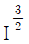
에 비례
(정답률: 알수없음)
11. 정전용량 C1과 C2의 직렬회로에 E의 직류 전압을 가할 때, C1 양단의 전압은 얼마인가?
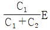
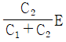
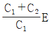
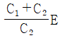
(정답률: 알수없음)
12. 항공전자장치 중 항공기 안전 운항과 직접 관계가 없는 것은?
- VHF 무선 통신 장치
- 자동방향 탐지기(ADF)
- 항공 교통 관제(ATC)
- 비행 data 기록 장치(FDR)
(정답률: 알수없음)
13. 참값이 1.01[V]인 전압을 측정하였더니 1.1[V]였다고 한다. 이 때 오차율은?
- 0.89
- 0.089
- 0.0089
- 0.00089
(정답률: 알수없음)
14. 펄스회로에서 펄스가 0 에서 최대 크기로 상승될 때를 100%로 한다면 상승시간(Rise Time)은 몇 % 로 하는가?
- 10%에서 90%
- 1%에서 99%
- 20%에서 150%
- 30%에서 180%
(정답률: 알수없음)
15. 수정발진기에 대한 설명 중 옳은 것은?
- 발진주파수를 수 Hz에서 수 MHz까지 수정편을 바꾸지 않고 가변으로 할 수 있으므로 편리하다.
- 발진조건을 만족하는 범위가 매우 좁으므로 주파수 안정도가 매우 양호하다.
- 주파수 체배없이 마이크로파 이상의 발진용에 적합하다.
- 수정편의 두께가 얇을 수록 발진주파수가 낮아진다.
(정답률: 알수없음)
16. 거리측정장비(DME)에 대한 설명으로 옳지 않은 것은?
- 전파의 속도가 일정한 것을 이용하며 지상 무선국과의 거리를 측정하는 장치이다.
- 지상에서 질문 펄스를 항공기에 보내어 시간을 측정함으로서 거리를 산출한다.
- 통상 초단파 전방향 무선표지기(V.O.R)국에 병설되어있는 주요한 항법 보조 시설이다.
- 송 ·수신용 안테나는 외부에 설치되어 있으며 블레이드 타입(blade type)이다.
(정답률: 알수없음)
17. 항공기에 사용되는 단파통신장치의 특성으로 옳지 않은 것은?
- 20 ∼ 30㎒ 주파수 사용
- 전리층 반사파 이용
- 장거리 통신
- SSB 방식
(정답률: 알수없음)
18. 자동추력제어 장치는 다음 중 언제 사용될 수 있는가?
- 이륙할 때부터 착륙할 때까지
- 이륙후 착륙할 때까지
- 순항 비행시
- 이륙할 때부터 순항 비행시 까지
(정답률: 알수없음)
19. 드리프트 전류는 어느 경우에 생기는가?
- 반도체의 양단에 전압이 걸려 반도체 내부에 전계가 작용하고 이에 의하여 반송자가 가속을 받을 때
- 반송자의 농도에 기울기가 생겨 확산할 때
- 소수 반송자가 다수 반송자와 결합할 때
- 빛을 받아 전자가 방출할 때
(정답률: 알수없음)
20. 마이크로파대에서 광대역 증폭을 쉽게 할 수 있는 것은?
- 클라이스트론(klystron)
- 에이컨관(Acorn tube)
- 판극관(Disk seal tube)
- 진행파관(Traveling wave tube)
(정답률: 알수없음)
2과목: 임의 구분
21. 증폭기의 주파수 특성을 오실로스코프로 측정 하고자 할 때 입력 신호 파형은 어느 것이 이상적인가?
- 구형파
- 정현파
- 삼각파
- 음성파
(정답률: 알수없음)
22. 회로에서 입력단자와 출력단자가 도통되는 상태는?
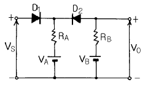
- VS＞VA, VS＜VB
- VS＞VA, VS＞VB
- VS＜VA, VS＞VB
- VS＜VA, VS＜VB
(정답률: 알수없음)
23. 조종실 음성 기록장치(CVR)의 채널수는?
- 2
- 4
- 6
- 8
(정답률: 알수없음)
24. 다음 그림은 레이더의 송신 펄스이다. 평균출력은 어느 것인가?
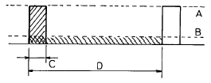
- A
- B
- C
- D
(정답률: 알수없음)
25. 방향탐지기(ADF)에서 사용되지 않는 안테나는?
- 루프안테나
- 센서안테나
- 접시형안테나
- 고니오미터
(정답률: 알수없음)
26. 인덕턴스를 측정할 수 없는 브리지는?
- 맥스웰 브리지
- 헤비사이드 브리지
- 캠벨 브리지
- 셰링 브리지
(정답률: 알수없음)
27. 민간항공기 HF SYSTEM에 대한 사항으로 옳지 않은 것은?
- AM 방식
- 2 ∼ 30㎒
- F층에서 반사되는 전리층파
- SSB 방식
(정답률: 알수없음)
28. 9[V]의 전지를 사용하여 100[㎃]의 전류를 10분 동안 흘렸다면 전지에서 나온 전기량은 몇 [C]인가?
- 60[C]
- 120[C]
- 1200[C]
- 6000[C]
(정답률: 알수없음)
29. 어떤 도선의 길이를 5배, 단면적을 3배로 하면 전기저항은 몇 배로 되는가?
- 3
- 5
- 5/3
- 3/5
(정답률: 알수없음)
30. 내부 잡음의 종류에 해당되지 않는 것은?
- 전자관의 플리커 잡음
- 코로나 방전 및 전력선의 유도 잡음
- 마이크로폰의 잡음
- 저항체에서 생기는 열교란 잡음
(정답률: 알수없음)
31. 다음 회로의 구성은 어떤 용도로 사용되는가?
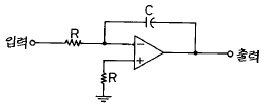
- 적분기
- 미분기
- 검파기
- 차동증폭기
(정답률: 알수없음)
32. 기상 레이다의 평판형 안테나에 대한 설명으로 옳은 것은?
- 발사 전력이 주로브(MAIN LOBE)로만 전달된다.
- 빔(BEAM)폭이 작아 분해능이 좋다.
- 주로 색상 레이다용으로 이용된다.
- 가,나,다항 모두 해당된다.
(정답률: 알수없음)
33. 마아커비이콘(marker beacon)의 변조 주파수와 전등색깔이 옳게 짝지어진 것은?
- 아우터마아커(outer marker) - 400[㎐], 백색
- 인너마아커(inner marker) - 3000[㎐], 적색
- 미들마아커(middle marker) - 1300[㎐], 호박색
- 아우터마아커(outer marker) - 3000[㎐], 청색
(정답률: 알수없음)
34. 변조도 40%의 AM파를 자승검파 했을 때 나타나는 신호파 출력의 왜율 K는?
- 10%
- 20%
- 30 %
- 40%
(정답률: 알수없음)
35. 자동조종을 조작하는 키면에 해당되지 않는 것은?
- 수평안정판
- 플랩
- 방향키
- 승강키
(정답률: 알수없음)
36. 항공기용 컴퓨터시스템에서 자체의 고장여부를 쉽게 파악하여 고장 내용을 결정하는 시설은?
- ATE
- MWS
- BITE
- ASTU
(정답률: 알수없음)
37. 디코더(decoder)회로란?
- 2진수를 10진수로 변환할 수 있는 회로
- 10진수를 2진수로 변환할 수 있는 회로
- 일시 기억회로
- 계수회로
(정답률: 알수없음)
38. 적산 전력계 내부에 있는 영구 자석은 어떤 작용을 얻기 위한 것인가?
- 회전력
- 제동력
- 와류 발생
- 회로 보호
(정답률: 알수없음)
39. 열전대 전류계를 높은 주파수에 사용시 일어나는 오차가 아닌 것은?
- 차폐 오차
- 공진 오차
- 배분 오차
- 표피 오차
(정답률: 알수없음)
40. 임피던스 회로를 어드미턴스 회로로 대칭시킬 때, 저항에 대한 대칭 소자는?
- 콘덕턴스
- 서셉턴스
- 용량성 콘덕턴스
- 유도성 서셉턴스
(정답률: 알수없음)
3과목: 임의 구분
41. 활주로의 중심에서 좌우 편위를 나타내는 초단파 전파를 사용하는 설비는?
- 글라이드 슬로우프(glide slope)
- 로칼라이저(localizer)
- 마아카 비이컨(marker beacon)
- 초단파 전방향 표지기
(정답률: 알수없음)
42. 선택된 방식(MODE)으로 비행기가 조종되고 있을 때, 표시기에 나타나는 색깔은?
- 붉은색
- 녹색
- 흑색
- 호박색
(정답률: 알수없음)
43. 100[Ω]의 저항에 1[A]의 전류가 1분간 흐를 때, 발생하는 열량은 몇 [㎉]가 되는가?
- 1.2[㎉]
- 1.44[㎉]
- 2.4[㎉]
- 2.88[㎉]
(정답률: 알수없음)
44. 기록장치와 경고장치 중 항공기 시스템에 대하여 조종사가 즉각 그 사태를 인식하지 않으면 안되는 이상이 발생이 되었을 경우는?
- 경고
- 주의
- 충고
- 조언
(정답률: 알수없음)
45. AN식 레인지 비이콘의 시간 교차키잉의 그림이다. 항공기가 1의 코스로 진입할때의 상황으로 옳은 것은?
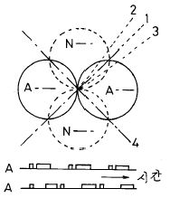
- N의 신호가 강하게 들린다.
- A의 신호가 강하게 들린다.
- 연속음이 들린다.
- 소리가 들리지 않는다.
(정답률: 알수없음)
46. PITCH, ROLL 및 플랫폼 기수방위(PLATFORM HEADING)에 관한 정보만을 얻고자 할 때, MSU(MODE SELECT UNIT) 스위치가 위치하는 곳은?
- OFF
- STBY
- ALIGN
- ATT REF
(정답률: 알수없음)
47. DC 부하전류의 변화에 따라서 DC 출력전압이 변화하는 정도를 무엇이라 하는가?
- 전류변동률
- 전류강하율
- 전압변동률
- 전압강하율
(정답률: 알수없음)
48. 기내 확성장치를 거치는 신호로서 틀린 것은?
- 승무원의 안내
- 금연 및 좌석띠 착용안내
- 녹음된 음악
- 승객의 노래
(정답률: 알수없음)
49. 다음 계기 중 상용 주파수에서 가장 많이 사용되는 것은?
- 전류력계형
- 열전쌍형
- 정류형
- 가동철편형
(정답률: 알수없음)
50. 다음 그림에서 상호 인덕턴스가 0.5[H]일 때, 코일 P의 전류를 0.5[sec] 사이에 10[A] 변화시키면, 코일 S에 유도되는 기전력은 얼마인가?
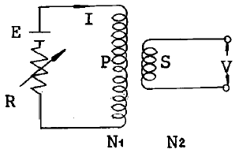
- 2.5 [V]
- 5 [V]
- 7.5 [V]
- 10 [V]
(정답률: 알수없음)
51. 진공속의 백금(Pt) 표면에서 전자 1개가 방출하는 데는 몇 Ｊ의 에너지가 필요한가? (단, 백금의 일함수는 6.27eV 이다.)
- 6.27
- 8.127×10-18
- 1.602×10-19
- 10.04×10-19
(정답률: 알수없음)
52. 초단파전방향 표지기(VOR)로 얻을 수 있는 정보가 아닌 것은?
- 비행코스
- heading 방향
- 무선국방향
- 고도
(정답률: 알수없음)
53. RL 직렬회로에서 L = 5[mH], R = 10[Ω]일 때, 이 회로의 시정수는 몇 [sec]인가?
- 2 × 10-4
- 3 × 10-4
- 4 × 10-4
- 5 × 10-4
(정답률: 알수없음)
54. 다음 자동조종장치중 조종면의 2차적 제어에 해당되는 것은?
- 플랩
- 도움날개
- 방향키
- 승강키
(정답률: 알수없음)
55. 관성 항법 장비에 따른 경고(ALERT) 표시기는 선택한 WAY POINT에 도달하기 2분전에 들어 왔다가 30초전에 나간다. 이 표시기가 설치되어 있는 곳는?
- CDU(CONTROL DISPLAY UNIT)
- FMA(FLIGHT MODE ANNUN)
- HSI(HORIZONTAL SITUATION IND)
- ADI(ATTITUDE DIRECTOR IND)
(정답률: 알수없음)
56. 지름 25[㎝] 권수 10회의 원형코일에 10[A]의 전류를 흘릴 때, 코일 중심의 자장 세기[AT/m]는 얼마인가?
- 400[AT/m]
- 200[AT/m]
- 637[AT/m]
- 31.9[AT/m]
(정답률: 알수없음)
57. 관성 항법장치(INS)의 설명 중 옳지 않은 것은?
- 자이로와 가속도계에서 얻어진 자료를 계산하여 각종 정보를 얻는다.
- 지상국에서 발사된 전파를 측정하여 현재의 위치를 연속적으로 알려준다.
- 비행 계획을 INS 장치에 넣어서 지상항행 원조시설 없이 지정된 항로를 비행한다.
- INS 장치에서 얻는 정보는 지구의 대권코스(Greatcircle)를 기준으로 계산된다.
(정답률: 알수없음)
58. 저주파 특성이 가장 좋은 방식은?
- 임피던스 결합
- RC 결합
- 변압기 결합
- 직접 결합
(정답률: 알수없음)
59. 정류회로에 관한 평활회로의 설명으로 옳은 것은?
- 용량성 평활회로에는 용량이 큰 콘덴서를 사용할수록 맥동률이 커진다.
- π형 여파기의 맥동전압은 인덕턴스가 크고, 콘덴서의 용량이 적을수록 적어진다.
- 다단 LC여파기에서 LC여파기를 직렬로 연결하면 맥동전압은 더욱 높아진다.
- 유도성 평활회로의 맥동률은 인덕턴스에 반비례하고 부하저항이 적을수록 적어진다.
(정답률: 알수없음)
60. 계수형 주파수계에서 게이트의 시간이 0.02초인데 그동안의 펄스 카운터가 900 이라면 피측정 주파수는?
- 450[㎐]
- 4500[㎐]
- 45[㎑]
- 450[㎑]
(정답률: 알수없음)